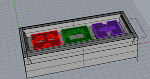
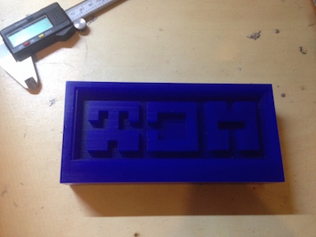
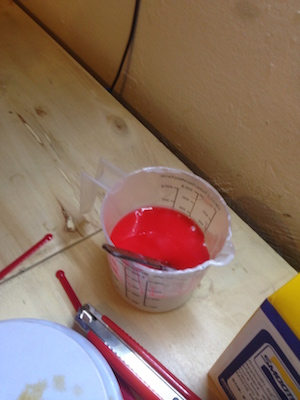
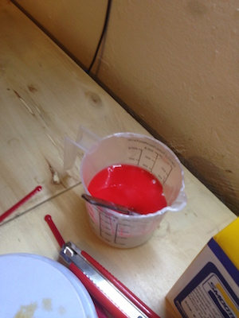
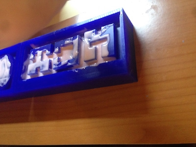
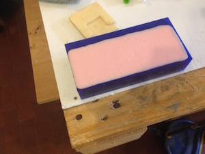
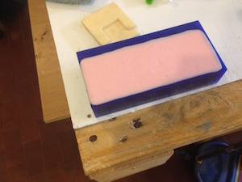
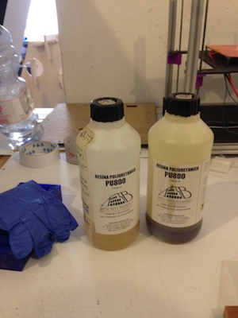
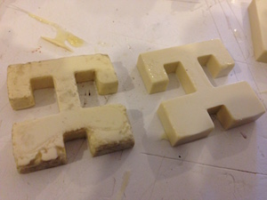
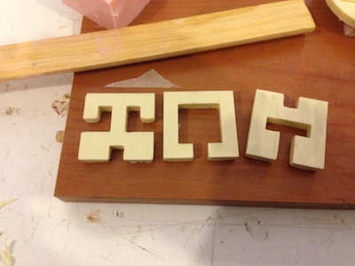

9- Molding and Casting
Intro
The assignment of this week was to create a mold and cast some material to realize an object.
Creating the mold
For this assignment I wanted to useflat shapes to create a 3D object so I decided to create a 3D puzzle. I started from this puzzle . The subsequent step was to create a 3D model of it for the milling machine. I started modelling the wax block. I created an engravement with angled borders. This is to allow to easily pull out the silicone rubber. Then I placed the models of the 3 pieces of the puzzle. You can downlod the model from here.

Then I send the model to a Roland SRM-20. I set two working steps. Roughing wit a 3 mm end mill and finishing with a 1,5 end mill.

Then I used silicone rubber to make the soft mold. There are two components that have to be mixed with the ratio of 100:10 (weight).
 

I mixed the two elements until I get a uniform material, then I casted it into the wax mold. To avoid air bubbles I spreaded the silicone rubber on the mold with a brush. Then I casted it. To know how much silicone I have to put insideI made a model on Rhino.


 

I put the mod on a vibrating surface to make the bubbles reach the surface and pop out. I waited for 1 day then i had my soft mold almost ready. I baked it for 2 hours at 80 degrees and for 1 hour at 100 degrees.
Then I decided to use polyurethane resin to make my object. It is made by two components that have to be mixed in a ratio of 1:1.


The resin start to react and becomes white and produces a little heat. However at the first casting I didn't mix properly the two components, so the result was not good. The second shoot was better. You can see the differences below.

You can see missing parts on the left. It was also very sticky so it become dirty very soon. Remember to use gloves when doing that stuff :D
The final result:

 Attribution, non-commercial, share alike.
Attribution, non-commercial, share alike.